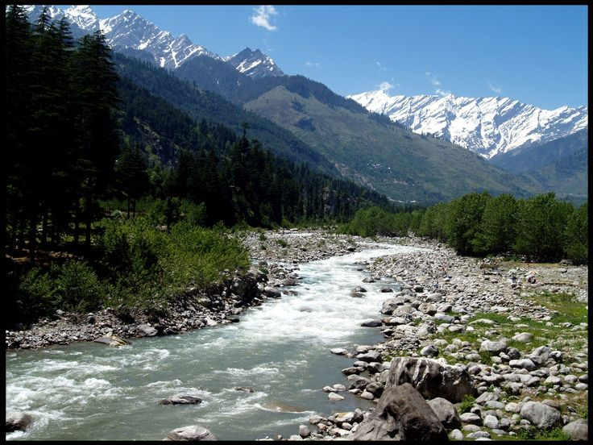
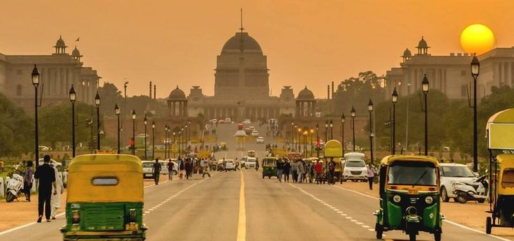

Welcome to my travel blog, Love Travelling. I’m Arya, an independent traveller writing about
my visits to countries near and far.
I research destinations myself and that’s part of the fun – visiting the local library and selecting
some
travel guides, looking things up online and, of course, all the amazing tips I discover from fellow
travel
bloggers.
My passion is travel, I just love visiting new places, immersing myself into local cultures of life
around
the world and discovering the unexpected! Stepping off a plane, I’m always in a hurry to get my passport
stamped, reclaim my luggage and walk out of the arrivals hall ready to begin a new adventure.
1. MANALI
By Arya | 12/05/2024

Let's look about Manali, being a sacred place and a popular hill station in India, known for its natural
beauty and adventurous
activities. It's also associated with Hindu mythology, specifically the legend of Manu, who is said to
have
stepped off his ark here to recreate humanity
Manali has been blessed with a near perfect location in the Kullu valley with three different mountains
surrounding it and the Beas river flowing through it only manages to add to its appeal.
After a bit tiring 14 hour bus journey, I reached the town just before mid day. There was a stark
contrast
in the temperatures of the destination and the place of my departure and that was something I had been
longing for all the way here.
I headed straight to Old Manali, the part of the town famous for housing backpackers. I must admit the
two
parts of the town are poles apart, coexisting by each other's side, bound by the common thread of
natural
beauty. Although the central town of Manali is quite attractive, it is a bit spoiled by the mainstream
tourism. Plagued with countless hotels trying to attract potential customers and the shops built
specially
for the purpose of tourism, it is not altogether what a traveler desires.
As you enter Old Manali, you cross an invisible barrier separating the two worlds. The air smells
different,
it being laidback in itself. You feel you belong there with a backpack and suddenly, the mountains seem
much
closer to you. This magical transformation, combined with the attractions such as Manu and Hidimba
temple,
make Old Manali the place to be.
My accommodation was located near a parking lot, being conveniently close to it and strategically away
from
the main street. Although the view of the mountains covered in snow visible from my room was tempting
enough
to look at all day, I set out to visit Manu temple which was almost behind the place I chose to stay at.
As is evident from the name, the temple is dedicated to sage Manu, who according to Hindu mythology was
the
creator of the universe. Since it is the only such temple in the world, people who visit Manali make it
a
point to come here at least once. It is also famous for the its location because of which one gets
breathtaking views of the valley.
After admiring Manu temple, I headed to another famous and unique temple of Manali, Hadimba temple.
Named
after Hadimba, the demon Goddess in the epic Mahabhrata, it is located about 3 km from Manu temple.
After the Hadimba temple, I started my search for a place to have some food after this long and tiring
day.
I didn’t want to go too far from the place of my stay today. On the edge of the main road, just before
the
narrow lanes leading to my hostel started, there was a tiny café called Bean and Gone. The owner, Mr.
Henry,
is quite friendly and believes in having a chat with almost everyone who visits his café. He made me a
special Hazelnut coffee when I told him it was my first visit to the town. He had lived all his life in
Manali and knew the city by heart. We discussed at length about life amongst the mountains, which he had
been living and I longed to live, and at the end of an hour long discussion, he offered me chocolate
fudge
for free! He also told me about a trek to a waterfall- Jogni falls and I made up my mind to go for it
the
next day.
Jogni falls isn’t the type you see in pictures and which has a clear white stream falling down. The flow
of
water isn’t too much but the beautiful scenery all around more than makes up for it. The 200 feet high
fall
is a delight to watch. The rocks through which the fall flows aren’t embedded in the mountain. They
seemed
to have been arranged randomly and it seems the structure might come crashing down anytime. This is what
makes it somewhat more attractive.
I had been in Manali for more than one-and-a-half day but I still hadn’t visited the banks of Beas.
Almost
feeling guilty, I came back from Jogni falls and headed straight to a small trek to a bank which, as per
the
locals, was a peaceful one since not many people knew about it. The way to the river was through a
not-so-dense forest. I guess this is why no one preferred to come to that particular place close to the
river.
Although light travels faster than sound, the swooshing sound of the running river preceded its sight as
I
approached it through the forest. I was almost tired and was thinking of taking some rest when I heard
it.
With a new-found energy, I rushed towards to get the first sight of the river.
I sat on a slippery rock; my shoes on another. I dipped my feet in the cold water as the river flew,
oblivious of my presence. The water was unbearable for a couple of minutes but after that, its soothing
factor was back. Staring all around me, one by one in every direction, all I could find was tranquility.
The
sun had hidden behind a thick cover of clouds and was unlikely to come out for the rest of the day. The
clouds, as if conquerors of a foreign territory, roamed boisterously close to the surface all around me.
It
was the perfect time for introspection and that is exactly what I did for the rest of the time I sat
there.
2. DELHI
By Arya | 25/10/2024

Delhi is a vibrant, historically significant, and politically important capital city. It's a melting
pot of
ancient culture, modern development, and diverse traditions, making it a major cultural, economic, and
political hub.
Delhi is big, it is chaotic, and it is loud.
You may feel these are obvious statements.
Yet there is a reason why travellers to the city have focused on these aspects since the Delhi Sultanate
era.
Sure, you may think you know how chaotic it is.
But you experience the magnitude of chaos only when you’re in the middle of it – like when trying to get
a
shopkeeper’s attention for a plate of Kachodi, or seeing the flocks of people at the metro station
during
rush hour, or seeing a kilometre-long line to enter a famous temple.
Now, coming to the ‘big’ part.
By big, I don’t just mean the vast urban sprawl, home to nearly as many people as the Netherlands.
Delhi is monumental; it is a city of considerable dedications to gods, long-dead rulers, and the vanity
of
countless long-gone Ozymandias-like figures.
The city’s buildings make you feel small, and you can feel the weight of history on your back; it almost
feels like you could at any moment see a Sultan passing by in a procession.
Nothing compares to strolling down the narrow, crowded lanes of the Old City while looking at the
tightly
packed shops and houses, cramped in a human sea, and then turning a corner and seeing the bulbous dome
of
Jama Masjid in the near distance, pointing to the divine. As it befits a national capital, Delhi
impresses
upon you what the country has been, not just what it is.
Delhi is very centrally located in India. Being that it is the capital of the country, most
international
flights pass through the city. Delhi is a huge metropolis that has, over the years, spread out many
miles
across each direction. Suburbs have sprung up all around the old city and there is definitely a whole
lot to
see and do.
Of course, given that the city has expanded so much, traffic is really bad in Delhi so when you are
deciding
where to stay and what to see, definitely keep that in mind.
Because I only had 48 hours in the city and had an early morning flight to catch back home, I decided
make
the most of it and start my Delhi travel itinerary close to the airport. I stayed at the Aerocity
complex
with has some of the best hotels around for almost any type of price range. The good part of Delhi is
that
there are many transportation options to get around the city. From public buses, Metro trains and even
taxis
and auto rickshaws. But because of my time constraints, I decided to hire an Uber to take me around the
city. That way I did not have to worry about parking and also around figuring out the Metro timings.
I absolutely love exploring green spaces in a city. And the fact that a city like Delhi acrually has a
large
outdoor green space like Lodhi Garden is absolutely amazaing. This is a great place to take a break,
hang
out and people watch. Apparently a lot of delhi’s local population also thinks so. At any given place
you
will find many local Delhiest are enjoying the outdoors, walking around or even just sitting on any of
the
benches hearing the birds chirping.
Humanyun’s tomb is the tomb of the Mugal emperor Humanyun that was built in late 1500’s by the empreor’s
wife. It was the first garden tomb in the Indian subcontinent and used beautiful red sandstone. In fact
it
is a World UNESCO heritage sites in Delhi. Take your time to explore the gardens and the tomb structure.
It
is worth spending a few hours wandering around just admiring all the wonderful architectural details of
the
tomb.
I spent most of my morning around Red Fort and Chandni Chawk and after a heavy meal, my driver took me
to
Dilli Haat in New Delhi. Since I had such a short stay in Delhi I did not have a lot of time to visit
many
different shops to buy some gifts for my family back home. This is where a trip to Dilli Haat came in
handy.
Originally setup by the Delhi Tourism along with Ministry of Tourism and Textiles, Dilli Haat is an
open-air
market where vendors from all over the country come to sell their goods. It is a must visit for anyone
who
wants to shop for India handy crafts and handlooms but is short on time. This market area has
representation
of art and crafts from almost every state in the country. Prices are reasonable and have the Government
of
India’s stamp of approval. And definitely give yourself plenty of time to wander the stalls.
Additionally,
there are also food stalls from different states so you can get a sample local delicacy from all over
India.
I was so glad I got to spend time exploring this city in spite of a really packed travel itinerary.
While I
know there is plenty more to see and do in the city, this two day travel itinerary for Delhi gave me a
glimpse of this historic and vibrant city that is India’s capital. So if you ever find yourself with a
weekend to spare when you are visiting India or even if you are passing through and have a layover in
Delhi,
do yourself a favor and explore this culturally rich and diverse city. You will not be disappointed.
3. MUMBAI
By Arya | 10/01/2025
Mumbai is a vibrant city with a rich history and culture, serving as India's financial capital and a
major
commercial hub. It's also known as the "City of Dreams" and is home to Bollywood, the world's largest
film
industry.
For some Mumbai is a city of freedom, for others it is a city of opportunities. For some it is a city
that
never sleeps, for others it is a city with no nightlife. For some it is a city of glitz and glamour, for
others it is a city of slums and squalour. For some it is the city of vada pav and bhelpuri, for others
it
is a city of fine dining. For some it is a city for the sons and daughters of the soil, for others it is
a
city of migrants. For some it is a city that does not care, for others it is a city with a never say die
spirit. For some it is a city of tomorrow, for others it is a dead city. For some it is a city of dirty
beaches, the Marine Drive and the Gateway of India, for others it is a city with history stretching back
to
two millennia ago.
For me, Mumbai is all this and then some more. For me, Mumbai is home and a city that I love, but not
necessarily like. It is a city which, in my opinion, has been given a raw deal by everyone concerned—its
politicians, its administrators, its visitors and most of all by its residents.
It never ceases to amaze me how much I unconsciously internalise popular perceptions without even
realising
it. Take for instance, Mumbai’s art scene.
Till about 3 weeks back, if somebody had asked me about Mumbai’s art scene, I would have said how it was
not
very vibrant, unlike Delhi. Or Bangalore. Or Chennai. I might have cited the absence of good art
galleries,
beyond the couple of famous ones that I knew. I would have also said something about the Kala Ghoda Arts
Festival, and then probably ended by mumbling something about not knowing much about my city’s artscape.
All I can say of the above para is that only the last line is correct — I really don’t know anything
about
my city’s art scene. As for the rest, I was only repeating the general impression about Mumbai’s art
scene
based on what I read and discussions with like-minded people.
I listened to Iskra’s description of her visit to Elephanta Caves with part fascination and part envy.
The
reason? In spite of having lived in Mumbai for nearly 23 years, I had never been to the Elephanta Caves.
Listening to Iskra, and that too a foreigner, rave about them needled me into resolving to visit the
caves
at the earliest opportunity.
And would you believe it? The opportunity presented itself to me the very next day, almost as if it was
just
waiting for me to make up my mind. My Facebook wall announced that Girls on the Go (GOTG), a women’s
only
travel club, was conducting a guided day trip to the Elephanta Caves on 13 March 2011. Would I be
interested? Not one to let go of an opportunity like this, I signed up for the trip within seconds of
seeing
the intimation.
The Bandra Fort or, to use its more impressive sounding official name, the Castella de Aguada was built
by
the Portuguese in 1640. It later passed on to the British, who lost it to the Marathas in 1739, and
gained
it back from them in 1761. You can read more about the Bandra Fort’s history here.
We reached Bandra Fort at around 9.00 in the morning. My first impression was that of diasppointment—the
Fort looked unimpressive and the cemented fort walls, an obvious attempt at restoration, was enough to
make
me want to turn back! But then the calming sea breeze, the sound of waves, and bird song, charmed me
into
exploring the place a little more.
.jpg)